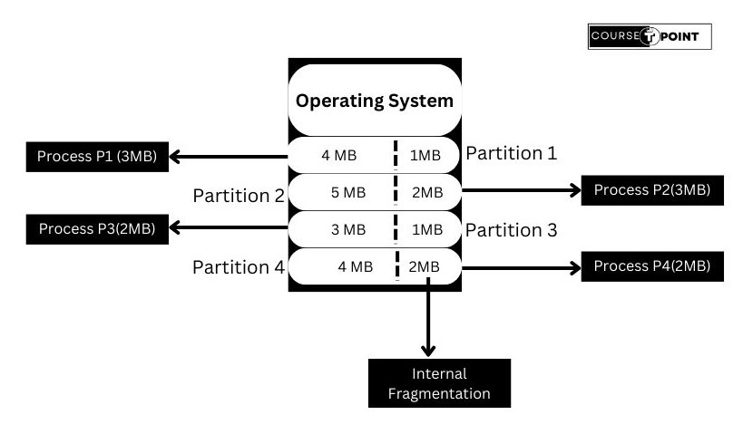
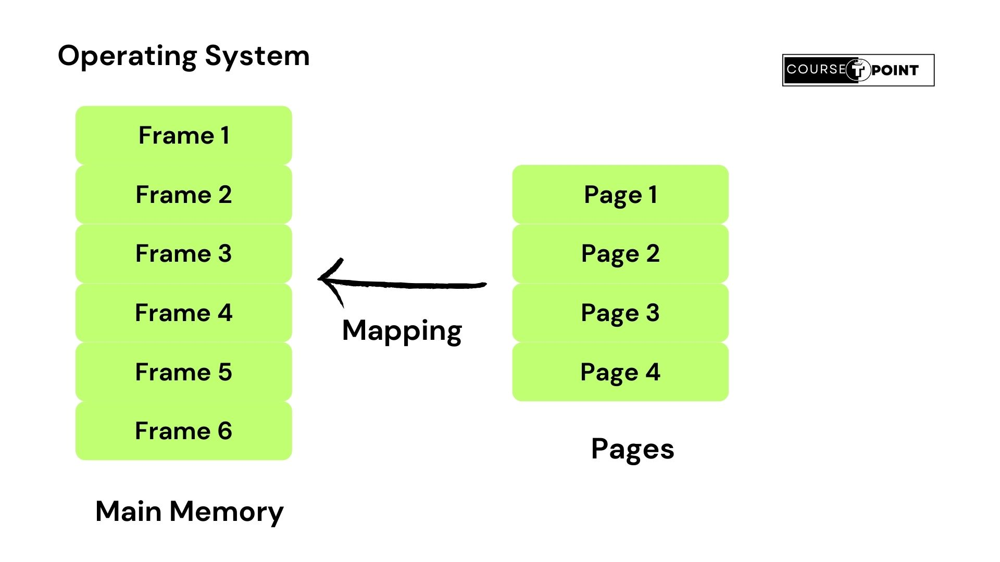
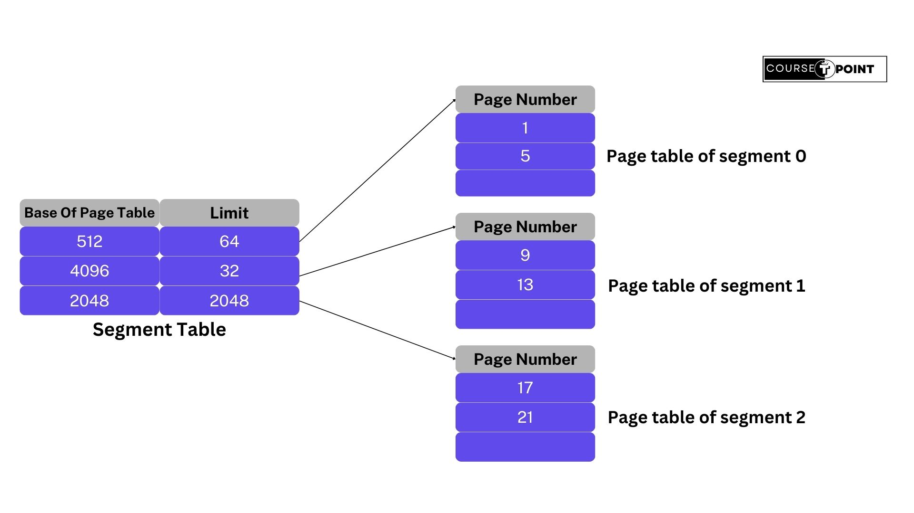
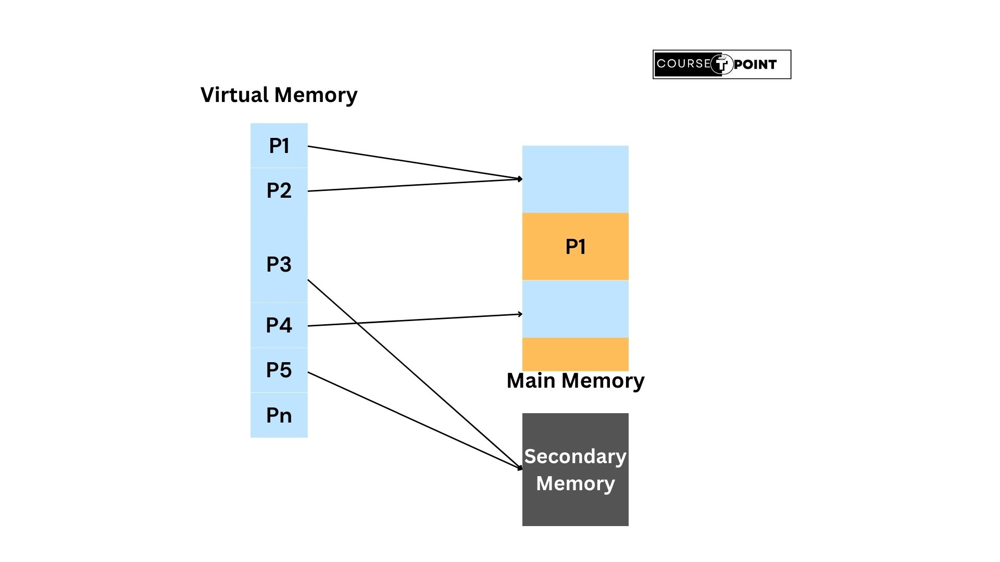

Memory management in an operating system (OS) is the process of efficiently and effectively managing the computer's memory resources, ensuring that processes and programs can execute smoothly while maximizing the utilization of available memory. Memory management involves various tasks, including allocation, deallocation, protection, and sharing of memory resources.
Effective memory management is essential for maintaining system stability, performance, and security in an operating system. By efficiently managing memory resources, an OS can ensure that processes can execute without interference, minimize memory-related errors and vulnerabilities, and optimize overall system performance.
What is Resident Monitor ?
A "resident monitor" typically refers to a software component that remains constantly loaded and active in memory to perform essential system management tasks. The term "monitor" in this context refers to a program that oversees or manages the execution of other programs or processes within the operating system.
Overall, a resident monitor plays a crucial role in the operation of an operating system by providing essential system management functionalities and ensuring the smooth and efficient execution of user programs and system processes.
Multiprogramming with Fixed & Variable partition
Multiprogramming with Fixed Partition:
Multiprogramming with fixed partitioning is a memory management scheme used in operating systems to allow multiple programs to reside in memory simultaneously. In this scheme, the memory is divided into fixed-size partitions, and each partition can hold one program.
Following image shows the Fixed-Partition of a memory-
Advantages Of Fixed Partiiton:
- Simple to implement.
- Efficient for systems with a small number of processes.
- Provides memory protection between processes.
- Predictable performance since each partition has a fixed size.
Disadvantages Of Fixed Partiiton:
- Fixed partition sizes can lead to internal fragmentation, where the allocated memory may be larger than necessary for some programs, leading to wasted memory.
- Limited flexibility in accommodating programs of different sizes.
- Susceptible to external fragmentation if there are frequent load and unload operations of programs.
- Inefficient memory utilization, especially if the size of partitions does not match the sizes of the programs.
Multiprogramming with Variable Partition:
Multiprogramming with variable partitioning is another memory management scheme used in operating systems, offering more flexibility compared to fixed partitioning. In this scheme, memory is dynamically divided into partitions of varying sizes, depending on the size of the programs being loaded into memory.
Unlike fixed partitioning, where memory is divided into fixed-size partitions, in variable partitioning, memory is initially considered as one large block. When a program is loaded into memory, the operating system dynamically divides this block into partitions of sizes matching the requirements of the program.
Following image shows the Variable partition of a memory-

Advantages of Variable partition:
- Flexible allocation of memory resources based on program requirements.
- Efficient memory utilization, as partitions are sized dynamically according to program sizes
- Reduced internal fragmentation compared to fixed partitioning, as memory is allocated more precisely to match program sizes.
Disadvantages of Variable partition-
- Increased complexity compared to fixed partitioning.
- Susceptible to external fragmentation, especially if programs are loaded and unloaded frequently.
- Overhead associated with managing variable-sized partitions dynamically.
- Requires efficient algorithms for partition allocation and memory management to avoid fragmentation and optimize performance.
What is Paging ?
Paging is a memory management scheme used in operating systems to manage physical memory efficiently by dividing it into fixed-size blocks called "frames" and dividing logical memory into blocks of the same size called "pages." This technique allows the operating system to manage memory in a more flexible and efficient manner.
Here's how paging works:
- Dividing Physical Memory: The physical memory (RAM) is divided into fixed-size blocks called frames. The size of each frame is determined by the hardware architecture and operating system design.
- Dividing Logical Memory: The logical memory, which includes the address space of each process, is divided into blocks of the same size as the frames in physical memory. These blocks are called pages. Each page typically contains a fixed number of bytes.
- Address Translation: When a program references a memory address, it uses a logical address, which is divided into two parts: a page number and an offset within the page. The page number indicates which page the address belongs to, and the offset specifies the location within that page.
- Page Table: To map logical addresses to physical addresses, each process has its own page table. The page table contains mappings from logical page numbers to physical frame numbers. When a program references a logical address, the operating system uses the page table to translate the logical address into a physical address.
- Page Faults: If a program references a page that is not currently present in physical memory (i.e., it has not been loaded into a frame), a page fault occurs. The operating system then loads the required page from secondary storage (e.g., hard disk) into an available frame in physical memory. If there are no available frames, the operating system may need to evict a page from memory to make space for the new page.
- Page Replacement: When all frames in physical memory are occupied, and a new page needs to be loaded, the operating system must select a page to evict from memory to make room for the new page. Various page replacement algorithms, such as Least Recently Used (LRU) or First-In-First-Out (FIFO), are used to determine which page to replace
- Protection and Sharing: Paging allows for memory protection and sharing. Each page can be protected from unauthorized access, and pages can be shared between processes that require access to the same data.
Here's an example picture of paging-
What is Segmentation ?
In operating systems, segmentation is a memory management technique that divides the computer's primary memory into segments of variable sizes to accommodate different parts of a program or process. Each segment represents a logical unit such as a code segment, data segment, stack segment, etc.
What is really needed is a way of freeing the programmer from having to manage the expanding and contracting tables, in the same way that virtual memory eliminates the worry of organising the programmer into overlays.
A straightforward and extremely general solution is to provide the machine with many completely independent address spaces, called segments. Each segment consists of a linear sequence of addresses, from 0 to some maximum. The length of each segment may be anything from 0 to the maximum allowed. Different segments may, and usually do, have different lengths. Moreover, segment length may change during execution. The length of stack segment may be increased whenever something is pushed onto the stack and whenever something is popped off the stack.
Advantages of Segmentation:
- Segmentation allows programs to be divided into logical units or segments based on their functionality.
- Segmentation enables dynamic memory allocation by allowing segments to grow or shrink as needed during program execution.
- Segmentation facilitates interprocess communication and data sharing by allowing different processes to access shared segments of memory.
- Segmentation is often used in conjunction with paging to implement virtual memory.
- Segmentation helps moderate the problem of external fragmentation by allowing the operating system to allocate memory in variable-sized segments.
- Segmentation provides a mechanism for memory protection by assigning different access permissions to each segment. This prevents unauthorized access to memory areas and enhances system security and stability.
Disadvantages of Segmentation:
- Segmentation can lead to both external and internal fragmentation. External fragmentation occurs when free memory blocks are scattered throughout memory. Internal fragmentation happens when allocated memory segments are larger than necessary.
- Segmentation introduces additional complexity to memory management algorithms and system design.
- Segmentation incurs overhead in terms of memory management data structures and bookkeeping.
- Segmentation can make memory allocation more challenging, especially when dealing with variable-sized segments.
- While segmentation provides memory protection mechanisms, it can also introduce security vulnerabilities if not implemented properly.
Difference between Paging & Segmentation
| S.NO | Paging | Segmentation |
|---|---|---|
| 1 | The physical memory is divided into fixed-size blocks called pages. | The logical memory of a process is divided into variable-sized segments. |
| 2 | In the term of memory access, Pagging is faster than Segmentation. | Segmentation is slower than Paging. |
| 3 | It has Internal fragmentation. | It has External fragmentation. |
| 4 | Paging is invisible to user. | Segmentation is visible to user. |
| 4 | The size of the paging is specified by the hardware. | The size of the segmentation is specified by the user. |
| 5 | Logical address space is divided into a page number & page offset. | Logical memory address space is divided into a segment number & segment offset. |
Page Segmentation
Segmentation is not widely used, Page Segmentation is widely used technique that divides a process's address space into segments, and then divides each segment into pages.his allows for flexible allocation of memory, where each segment can have a different size, and each page can have a different size within a segment.
Page Segmentation combines the benifits of Paging & Segmentation. The main memory is split into variable-size segments, which are subsequently partitioned into segmentation with paging in "smaller fixed-size disk pages". Each segment has a page table, and each process has many page tables.
Here's a picture shows the page segmentation:
Advantages of Page Segmentation:
- Page segmentation enables the implementation of virtual memory, allowing processes to access more memory than physically available by storing parts of the memory in secondary storage.
- By dividing memory into fixed-size pages, the operating system can efficiently manage memory allocation and deallocation, reducing fragmentation and improving memory utilization.
- Page segmentation facilitates memory sharing between processes and implements copy-on-write mechanisms, allowing multiple processes to share memory pages until one of them modifies the shared data.
- The Segment size determines the size of the Page Table
Disadvantages of Page Segmentation
- Page segmentation can suffer from internal fragmentation, especially when segments are not an exact multiple of page size.
- Managing both segmentation and paging adds complexity to the memory management system.
- Page segmentation can lead to fragmentation overhead, particularly when the memory allocation and deallocation patterns result in fragmented memory regions.
- Combining segmentation and paging requires additional memory overhead for storing segment tables and page tables.
What is Demand Paging?
Demand paging is a memory management scheme used in operating systems to allow processes to use more memory than physically available in RAM. It works by only loading the portions of a program into memory that are currently needed, as opposed to loading the entire program into memory at once.
When a process is started, the operating system loads only a small portion of the program into memory, typically just the code needed to start execution, along with any essential data structures. As the process runs and accesses memory, the operating system brings in additional pages of memory on demand, hence the name "demand paging." This reduces the initial memory requirement for starting a process and allows the system to efficiently manage memory resources.
Demand paging relies on the concept of virtual memory, where each process has its own virtual address space. The operating system maps virtual addresses to physical addresses in RAM, and when a process accesses a memory address that is not currently in RAM, a page fault occurs. The operating system then fetches the required page from disk into RAM, updates the page table to reflect the new mapping, and allows the process to continue execution.
Advantages of Demand Paging:
- Demand paging allows processes to use more memory than is physically available in RAM.
- Demand paging reduces the startup time for processes.
- Demand paging contributes to improved system responsiveness.
- Demand paging provides flexibility in memory management by dynamically allocating and deallocating memory pages as needed.
Disadvantages of Demand Paging:
- Demand paging depends on paging data between disk and memory.
- Demand paging can lead to memory fragmentation, both external and internal.
- Demand paging can increase the risk of deadlock situations.
- Demand paging can provoke thrashing if the system is overloaded with too many processes competing for limited physical memory.
Virtual Memory
Virtual memory is a memory management technique used by operating systems to provide the illusion of a larger memory space than is physically available in the computer's RAM (Random Access Memory). It allows programs to use more memory than is actually installed on the system by utilizing disk storage as an extension of physical RAM.
In virtual memory systems, each process is given its own virtual address space, which is divided into fixed-size blocks called pages. These virtual pages are mapped to physical pages in RAM through a process known as paging. When a process accesses a memory address, the operating system translates the virtual address to a physical address, fetching the corresponding page from RAM if it's already present or loading it from disk if necessary.
The basic idea behind virtual memory is that the combined size of the program, data, and stack may exceed the amount of physical memory available for it. The Operating System keeps those parts of the program currently in use in main memory, and the rest on the disk.
For Example- a 16MB program can run on a 4-MB machine by carefully choosing which 4MB to keep in memory at each instant, with pieces of the program being swapped between disk and memory as needed.
Virtual Memory can also work in a multi-programming system, with bits and pieces of many programs in memory at once. While a program is waiting for part of itself to be brought in, it is waiting for I/O and cannot run, so the CPU can be given to another process, the same way as in any other multi-programming system.
Here's an image example shows the virtual memory-
Advantages of Virtual Memory:
- Virtual memory systems provide memory protection mechanisms that prevent one process from accessing the memory space of another process.
- Virtual memory enables efficient utilization of physical memory resources by loading only the portions of a program or data that are actively being used into RAM.
- Virtual memory systems support memory sharing mechanisms that allow multiple processes to share common code or data segments.
- Virtual memory can prevent from memory fragmentation.
- Virtual memory allows an unlimited amount of multi-programming.
Disadvantages of Virtual Memory:
- Virtual memory depends on paging data between disk and RAM.
- Virtual memory increases the overhead for handling paging interrupts.
- Virtual memory increases the software complexity to prevent thrashing.
- It does not offer's the same performance as RAM.
- It reduces system stability.
Thrashing
Thrashing is a phenomenon that occurs in computer systems, particularly those using virtual memory, when the operating system spends a significant amount of time swapping data between RAM (Random Access Memory) and disk, but makes little or no progress in executing instructions. Thrashing typically happens when the system is overloaded with too many processes or when the total memory demand exceeds the available physical memory.
When a system’s physical memory is insufficient to accommodate all the programs that are currently executing, the operating system uses virtual memory to swap out pages of memory that are not currently needed to free up space for other programs. However, if the system constantly swaps data back and forth between physical and virtual memory, it can become overwhelmed and enter a state of Thrashing in os.
Thrashing in os can occur due to several factors, including too many running programs, inadequate memory resources, poor memory management algorithms, or an excessively high demand for memory by a single program.
Operating systems typically use various memory management techniques, such as virtual memory management, page replacement algorithms, and memory paging to prevent it. These techniques help ensure that the system can efficiently manage its memory resources and avoid the costly and disruptive effects of Thrashing in os.